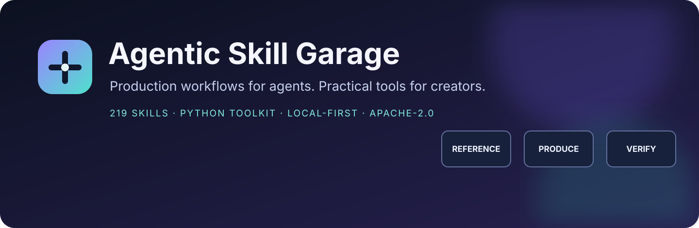
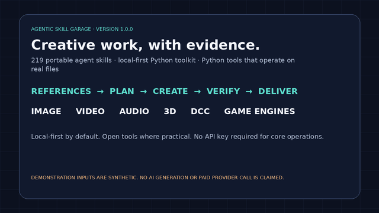
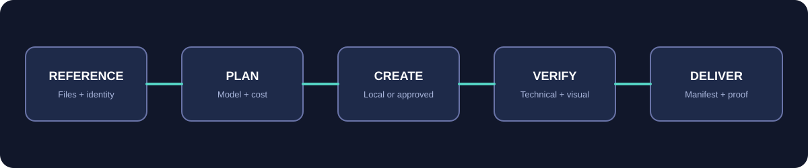

Reference control
Ingest selected files, preserve directory structure, hash assets, detect duplicates, and build identity profiles.
Open source · Local first · Evidence led

219 portable skills and a Python toolkit for image, video, audio, 3D, asset consistency, generative-model operations, and creative delivery. Bring your own local tools or explicitly connected services.
Apache-2.0219 Agent SkillsPython 3.10+No telemetry
Watch the full MP4 walkthrough. The demo uses synthetic files and real local CLI operations.

Ingest selected files, preserve directory structure, hash assets, detect duplicates, and build identity profiles.
Use local ComfyUI, FFmpeg, Blender, and installed creative software with focused specialist workflows.
Discover live model capabilities, inspect schemas, and quote from dated rate cards before paid generation.
Validate dimensions, media streams, loudness, hashes, scene state, and engine-specific deliverables.
python -m venv .venv pip install -e ".[images]" # optional Pillow image commands asg doctor asg assets ingest ./references --recursive --library ./asg-assets asg identity init "Nova" --kind character asg image resize ./references/hero.png ./exports/hero.webp --width 1600 --height 900 asg comfyui status asg media probe ./cut.mp4 asg blender audit ./scene.blend
A skill does not reproduce a hosted generative model or a proprietary editor. Agentic Skill Garage orchestrates real local tools and explicitly connected services. Optional software must be installed and licensed, and live service behavior must be validated in the target environment.